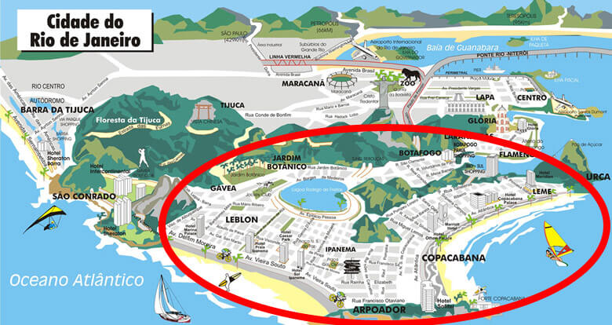

DICAS IMPORTANTES DE SEGURANÇA
O Rio de Janeiro é a segunda cidade mais populosa do Brasil, conhecida por sua natureza deslumbrante, cultura vibrante e
monumentos emblemáticos. É extremamente importante adaptar sua estratégia de viagem devido ao seu complexo contraste socioeconômico e
aos limites seguros de seus bairros.
O mapa abaixo indica os bairros mais seguros, projetados para manter turistas e moradores longe de áreas urbanas com altos índices de criminalidade.
Ipanema, Copacabana, Leblon, Leme, Pão de Açúcar e Cristo Redentor são locais bem fiscalizados pela polícia local. Por favor, permaneça dentro da
zona destacada para seu conforto e segurança.

Pequenos furtos ainda podem acontecer, mas são menos prováveis quando os visitantes adaptam suas atividades turísticas diárias com as cinco dicas
importantes de segurança a seguir:
Evite joias, relógios e itens pessoais caros ao visitar locais públicos ou a praia.
Mantenha seu celular sempre no bolso da frente ao visitar locais públicos ou a praia.
Não há problema em tirar fotos, mas fique atento ao usar seu dispositivo em áreas públicas abertas
(exceto em pontos turísticos onde a segurança é rigorosamente reforçada). Câmeras profissionais são bem-vindas em pontos turísticos.
Seu documento de identidade, cartão de crédito e algum troco em reais (moeda local) são suficientes ao visitar áreas públicas. Guarde sua carteira,
vários cartões e passaporte no cofre do hotel. A maioria dos lugares e vendedores ambulantes não aceita dinheiro em espécie.
Não use transporte público. Uber e táxi estão disponíveis em todos os lugares. Certifique-se de ativar a verificação do seu PIN antes de iniciar sua viagem.
Mantenha seu estilo casual, simples e neutro ao visitar áreas públicas.